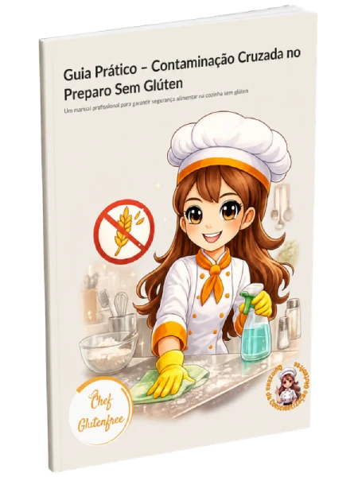
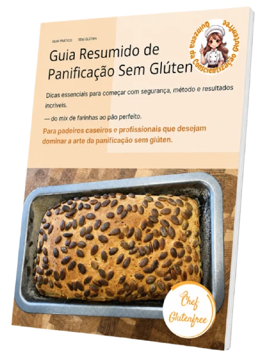
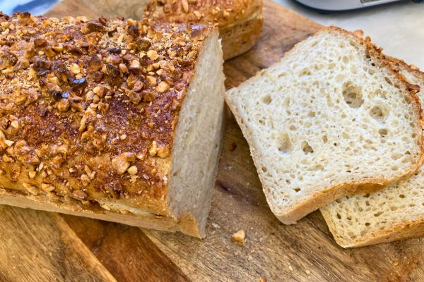
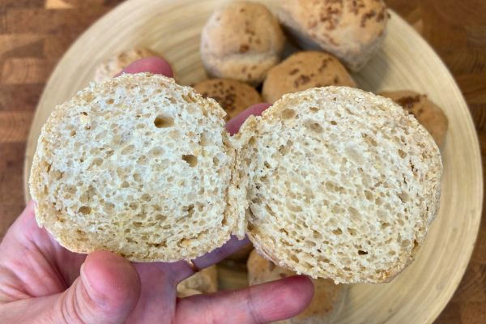

Manual QCG 2026
O material completo da 2ª edição, organizado e pronto para consultar quando quiser
O evento acabou — mas o conhecimento que transforma vidas está disponível por mais 12 meses.
Durante 15 dias, a Chef GlutenFree (Drª Luciene Marques) revelou conteúdos que médicos raramente explicam: barriga inchada, eixo intestino-cérebro, leitura de rótulos e muito mais. Agora você pode ter acesso a TODO esse material por apenas R$ 97.
QUERO ACESSO COMPLETO POR R$ 97Acesso imediato por 12 meses • Pagamento 100% seguro
O material completo da 2ª edição, organizado e pronto para consultar quando quiser
Um guia completo com indicações de onde encontrar produtos sem glúten no Brasil e em Portugal, facilitando suas compras do dia a dia.

Um manual profissional para garantir segurança alimentar na cozinha sem glúten, do utensílio ao preparo.

Dicas essenciais para começar com segurança, método e resultados incríveis — do mix de farinhas ao pão perfeito.
Todos os vídeos da quinzena disponíveis para rever no seu ritmo, pelo celular ou computador
Guia prático para identificar conservantes e aditivos prejudiciais nos rótulos dos alimentos
Dezenas de outros guias exclusivos que você encontra ao acessar sua área de conteúdos da Quinzena.
Drª Luciene Marques — Referência em panificação inclusiva e culinária sem glúten
Drª Luciene Marques dedica sua trajetória a transformar a restrição alimentar em liberdade gastronômica. Através do canal Chef GlutenFree, ela já ajudou milhares de pessoas a entenderem o que o glúten faz no corpo e a descobrirem que comer bem sem glúten não apenas é possível — é delicioso.
A Quinzena da Conscientização GlutenFree nasceu do desejo de levar informação séria, acessível e transformadora para quem mais precisa.
Muitas pessoas convivem com esses sinais sem saber que a alimentação pode estar diretamente relacionada:
Se você marcou pelo menos um desses itens, o glúten e o trigo podem ter mais a ver com isso do que você imagina. E este material vai te mostrar por quê.
Causas, tipos, o que é distensão abdominal e como o glúten interfere
A conexão entre suas emoções, seu humor e a saúde digestiva
Psicologia da mudança alimentar e como superar crenças limitantes
Como identificar glúten escondido nos ingredientes e códigos INS
Tabela completa com o que cada aditivo faz e seu nível de risco
Farinhas sem glúten, receitas e como montar uma cozinha inclusiva


Sofri com rinite alérgica aguda por 15 anos, já estava com sangramento na mucosa nasal e não suportava mais remédios. Até que descobri que o glúten era completamente prejudicial para o corpo. Retirei o glúten por 2 semanas e senti melhora na respiração — não precisei mais de inalador e soro nasal. Era o glúten me envenenando. Hoje não sinto nada, nem lembro quando tive uma crise de rinite. Remédio nunca mais!Neide @Neide135
Tive problemas intestinais crônicos por anos. Desde que parei de consumir glúten, minha saúde melhorou muito. Obrigada por fazer parte dessa transformação!Rosi Martins @rosimartins4979
O melhor canal que nos ajuda! Fiz o melhor pão da minha vida com as receitas disponíveis aqui. Muito obrigada!Jacinta Angelim @jacintaangelim156
Pagamento único • Acesso imediato • Sem mensalidade
Sim! Todo o conteúdo da quinzena foi gravado e organizado. Você terá acesso a todos os vídeos, materiais e ao manual completo para assistir no seu ritmo, quantas vezes quiser, durante 12 meses.
Sim. Após o pagamento, você recebe acesso imediato a todos os materiais por um período de 12 meses a partir da data da compra.
Sim! Todo o material é responsivo e pode ser acessado por qualquer dispositivo — celular, tablet ou computador — a qualquer hora e em qualquer lugar.
Com certeza. O conteúdo foi criado tanto para celíacos quanto para pessoas com sensibilidade ao glúten ou que simplesmente querem entender melhor o impacto do trigo na saúde. A informação é valiosa para qualquer pessoa.
O pagamento é realizado de forma segura pela plataforma Hotmart, que aceita cartão de crédito, boleto bancário e Pix. Após a confirmação, o acesso é liberado imediatamente.
Sim. Se por qualquer motivo você não estiver satisfeito com o conteúdo, entre em contato em até 7 dias após a compra e faremos o reembolso integral, sem perguntas.
O conhecimento que você vai receber pode mudar a forma como você se relaciona com a comida — e com o seu próprio corpo.
GARANTIR MEU ACESSO — R$ 97Acesso imediato por 12 meses